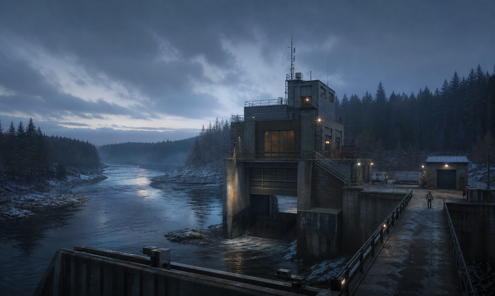
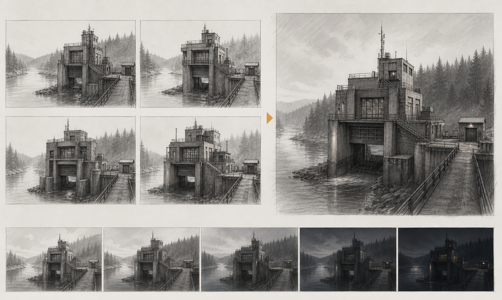
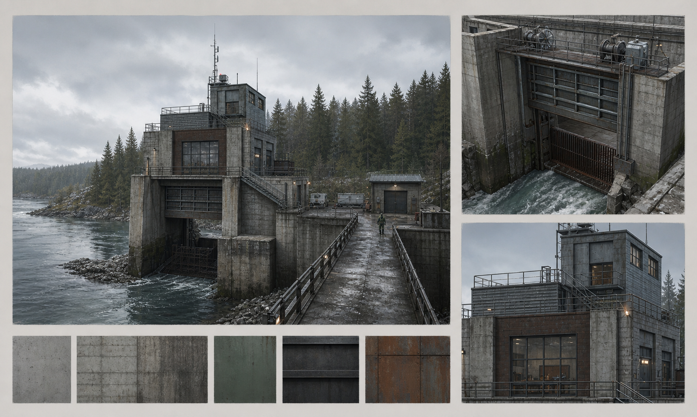
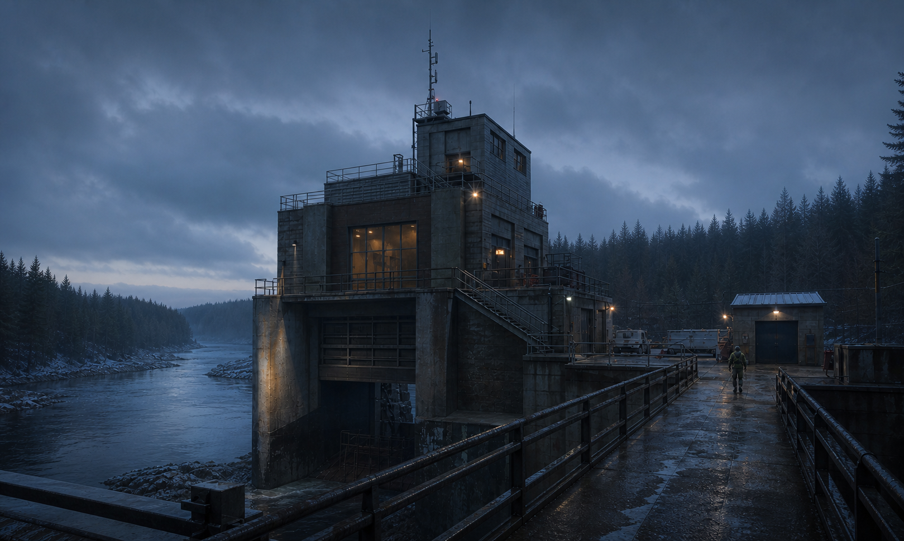
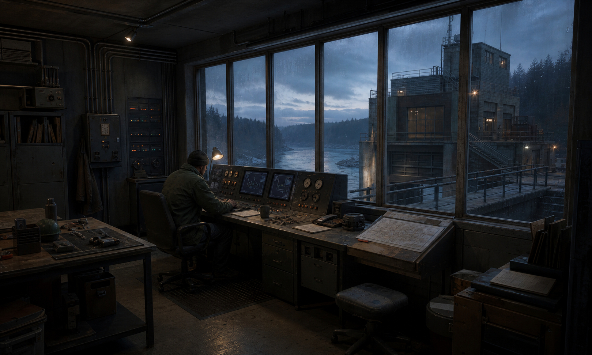

ENVIRONMENT CONCEPT
Northern
Relay Station
Северная гидротехническая станция для игровой локации. От силуэта и материалов — до ключевого кадра и интерьера.

01Задача
Правдоподобная игровая локация без декоративной научной фантастики.
02Решение
Функциональная архитектура, сдержанный свет и понятный масштаб.
03Метод
AI-генерация под ручным брифом, отбором и единым арт-дирекшеном.
01
Итерации
Проверили массу здания, путь обслуживания и читаемость силуэта до финального света.

02
Конструкция
Выделили рабочий шлюз, диспетчерскую, лестницы и материалы, которые стареют правдоподобно.

03
Место
Два ракурса связывают здание, реку и маршрут сотрудника в одну понятную локацию.

04
Внутри
Интерьер продолжает ту же систему: аналоговые приборы, рабочий свет и вид на шлюз.
